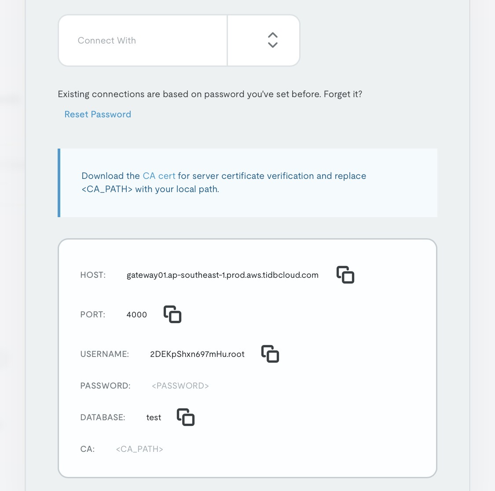
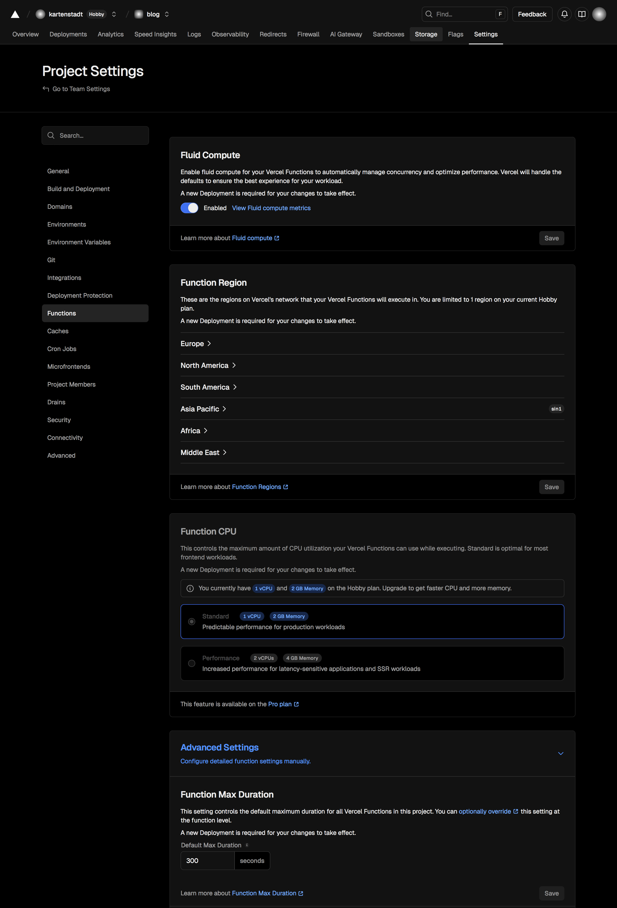

How I Got A Blog Up, With Nothing
A
complicated
simple guide to get a blog up for free
, while not using an SSG (
Static Site Generator
). A
reliable
working WordPress instance
to get things started
*. Remember, life is like a sandbox, you can always fix things. ^ssg
%%for context: I started this website from my iPad alone.%%
Prerequisites
- A resilient heart, because this will be a painful (but fun) process.
- *Preferably a good payment method (only required for the domain)(the domain is optional too)
- An AI tool, or godly DuckDuckGo skills.
Services to be Used
- A Serverless provider like Vercel or Netlify , (both of which provide awesome free tiers to reel poor students in)
- A database cloud manager, like TiDB Cloud . Get your account ready before starting with the steps for reduced mental burden. Create an organisation. Clean up, your database will initially be called ‘test’ you can change that later.
- An image hosting or cloud storage service, like Cloudinary
- A source/git client like GitHub .
Steps to Making the Blog
-
Open Vercel, do the basic steps like creating a team etc. Then create a project, name it \
. - Filter through the templates available and find ServerlessWP (or alternatively, click on this hyperlink and hit deploy to Vercel)
- Connect it to your Git Server and create a repository to host the source code for our website. Next, It’ll ask for your database details
-
Open TiDB Cloud. We’ll be connecting our cluster to Vercel. Click connect, then
- ‘Connect with’ Wordpress
- Generate your password
- Copy paste the details into vercel
-
Do not bother with the operating system. It has no effect on our workflow

-
Ensure that your Vercel server and Database server are in the same region, or nearby.
Also ensure Fluid Compute is on.
Note: To change your database region, you’ll need to recreate your cluster. Although TiDB by default, chooses the location which is close to you.
Additionally
, in case of failure, you may increase the max timeout duration to 300 seconds. All of these settings are in the ‘Functions’ tab.
1

%% Pictorial guide to doing the above steps in vercel.%% - Now, let the deployment build, then head to the website through the domain provided by Vercel, ex: blog.vercel.app
- Then create an account and it will take a minute to build.
Troubleshooting
If your Wordpress instance upon installing times out, ensure Step-5. Then, in TiDB, we’ll need to wipe out your whole database via the SQL Editor (or) alternatively, just deleting the cluster, remaking it and continuing from Step 4. I’ll go with the SQL option.
Steps:
- Open your cluster page at TiDB Cloud and from the menu at the top right, enter the SQL Editor.
- Type in:
use test;
DROP DATABASE test;
CREATE DATABASE <the-name-you-want>;
%% What it does is enter the database, then delete and create it again. We need to remove our old database because our instance failed to build properly. %% 3. Then, hit ‘Run’. 4. Open your website again, and create again.
Finishing Words
This guide is not conclusive, you might have to DuckDuckGo (I will not be using Google, fuck Google). But, I have tried my best to sprawl out all I know, because sometimes, you need a project in life yet can seem to find your way. Creating this blog meant a lot to me, it could to you too.
I’ll also be writing another article exploring the SSG #ssg way too.
-
The latency will be detrimental during the final install of Wordpress ↩